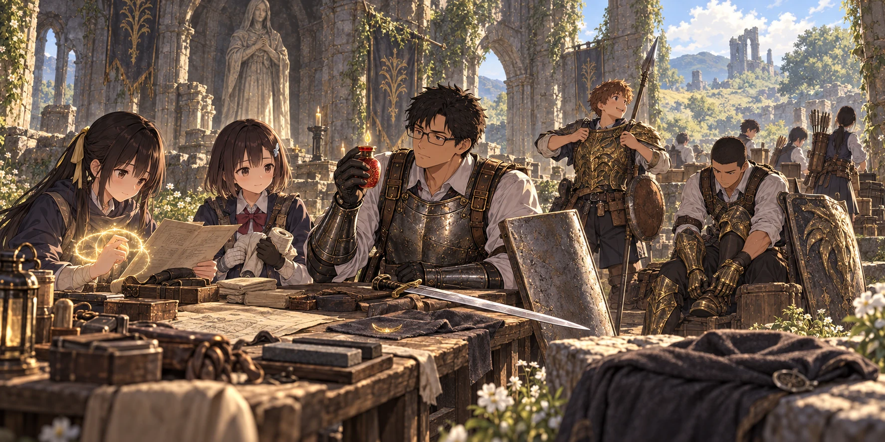

DAY97 / TURN1−107
帰ったあとの話をしよう。

「勝ったら必ず聞く。それだけは約束する」
【DAY97・朝】教会へ光が差す頃、翼が矢の束を机に並べていた。花が一本ずつ曲がりを確かめ、千夏が羽根を撫でる。最後の二連戦。その言葉を口にすると、何をしていても、少しだけ手が早くなった。
私はホーラ・ルーの追憶を取り出した。王の斧を得る道もある。あの踏みつけを学ぶ道も。けれど、今から誰かに新しい武器の間合いを覚えさせるより、何十日も握ってきたものを届かせたかった。
追憶をルーンへ換えた。三千。昨日までの三万四千七百四十二に加え、三万七千七百四十二を原資にする。黒き剣の追憶は残した。葵を攻撃役へ変えるために、最後の回復の仕組みまで組み替える余裕は、今回は取らない。
円卓へ行くのは、すでにそこへ招かれた私だった。生徒の武器は預かって運ぶ。未訪問の者まで連れて飛べるわけではない。
鍛冶場で、ヒューグは差し出した剣を受け取った。私が口を開くより先に、刃の付け根を見て、作業台の上へ置く。「使ってきたか」。「使って、帰ってきました」。彼はそれ以上を聞かず、槌を取った。
先生の片手剣は＋二十四へ。陽太と健太の槍、陸の大剣、花と千夏の短弓、悠の杖は＋十八。拓海の杖は＋十五、紬の触媒は＋十二まで進めた。先生の剣を＋二十四から＋二十五へ上げるには、古竜の鍛石が要る。その一段は金だけでは買えない。黄金のハルバードと大竜爪、竜爪の盾は、喪色＋四のまま使う。
双子の老婆のところで見つけたのは、金色の攻撃ではなく、その光から身を守る祈祷だった。王たる聖防護。ギデオンを倒して得た防具の横に、その名を教わった術の手順書が並ぶことになる。道の終わりには、倒した相手のものまで持っていく。
ルーンの弧は二つ買った。教会ではカーレから矢を二百本。私が数え終える前に、彼は束の端を紐で結び直してくれた。「最後だと思うなら、なおさら数えな」。私は礼を言い、もう一度数えた。
戻ると、陽太は異形の竜の鎧を前に腕を組んでいた。全部を一人で着ることはしない。彼に胴、健太に手甲と足甲を渡す。百智の鎧は陸へ、手甲は葵、足甲は紬へ。二つの兜は、視界と重さを優先して置いていく。
以前の上衣を脱いだ陽太は、金色の胴を締めてもらってから、教会の外で走った。止まる。転がる。槍を持って立つ。「動ける。けど、これで掴まれに行くつもりはないです」。健太が、自分の足甲を叩いて頷いた。防具は避けられなかった時のためにある。
紬は手順書を葵と読んだ。火よ、焼き尽くせ。その炎を、今日は記憶の準備から外す。覚えたことまで消えるわけではない。限られた枠を、何に使うか選ぶのだ。
「私が守る方に回れば、葵は回復を見ていられるよね」。「うん。ただ、光が切れる前に言って。ずっと効いてるつもりには、ならないように」
試しに放った祈りは、攻撃のように前へ飛ばなかった。紬の近くにいる者の輪郭へ、淡い光が薄く重なる。遠くの花には届いていない。十三人を一度に守れるものでもなく、拳を受け止める術でもない。七十秒という目安を数え、消えるところまで見た。
葵は、黄金樹の恵みと黄金樹の回復を残す。紬は、聖防護と回復。青瓶も術も、一人の持ち分を共有する。二人は互いの仕事を奪わず、足りなくなった時に声を上げる順番を決めた。
そして、袋の奥から聖杯の雫が出てきた。山嶺から持ち帰った一つ。使わないまま、ここまで来てしまっていた。「これを最後までしまっておく方が、よほど怖いな」。私は自分の瓶へ使った。持てる数は四つのまま、赤い一口が返してくれる力が増える。皆の瓶まで同時に変わったわけではなかった。
準備を数え終えた頃、結衣が尋ねた。「帰れたら、学校ってどうなってるんでしょうね」
机の周りが少し静かになった。授業がまだ続いているのか。家で誰かが待っているのか。こちらの九十七日が、向こうで何日なのか。女神から聞いた帰還の条件と、それを知らないことは、両立していた。
「約束されているのは、クリアした時に生きているか、復活している私たちが、帰還の対象になることだ。何月何日の教室へ帰るのかまでは、聞いていない」
花は矢を束ねる手を止めなかった。「じゃあ、帰ったら最初に、お母さんに電話します」。千夏が笑った。「私、寝たい。見張りの順番を気にしないで」。誰かが普通の布団、と言い、別の誰かが温かい風呂、と続けた。少し前までなら、そんな話をして気を緩めるなと言ったかもしれない。今は、続きを聞いていたかった。
「メリナは？」。小さな声だった。颯が壁のそばからこちらを見ていた。「俺たちだけ帰って、あの人は、あのままなんですか」
私は、答えを持っていなかった。攻略サイト先読みを開いても、私たちが選んだ道に、彼女を普通に蘇らせる手順は出てこない。私たちのために残した未解放祝福が、彼女にも同じように働くという保証もない。
「勝ったら、リュシアに聞こう。取り戻すことができるのか。できるなら、メリナ自身は何を望むのか」
「お願いすれば、何でも叶う？」。「そこまでは言えない。だから、勝ったら必ず聞く。それだけは約束する」
紬が手順書を閉じた。「じゃあ、それも帰ったあとの話ですね」。まだ帰れない人を含めて話すと、さっきまで浮ついて聞こえた未来の話が、急に重さを持った。
時間切れになれば、この世界は終わる。次の世界へ進むとして、どんな場所になるのか、何を持っていけるのかは、決まっていない。私たちはその話を、今日の逃げ道にはしなかった。まだ、こちらで終わらせるための時間がある。
休息を終え、私はゴドリックの大ルーンを装備した。C隊が塔まで運んだものだ。弧が一つ砕け、身体の内側に、いつもより太い芯が通るような感覚があった。筋力も息も、確かに余裕がある。だが自分のレベルが上がったわけではない。死ねば、これを外せば、その上乗せは失われる。
翼は残る弧を包み直した。「使う人が一人でも、持ってきたのは六人ですから」。私は頷いた。「この力で、十三人が前へ行く」
【DAY97・十一時三十分】整備と買付、留め具の調整まで三万三千八百ルーン。原資の約九割を使い、三千九百四十二を残した。矢は五百六十六本。今日の三十三人分の食事は先に分け、未配給の備蓄は二十九食。午後の狩りの成果は、まだ数えていない。
王座へ戻れる者は十三人。残る二十人は、教会と救援を担う。祈りの光は試演のあとに補充した。クララも呼べる。まだ最後の霧には入っていない。
私は作戦帳を閉じた。勝ったあとに話したいことが、増えていた。
今回の準備記録
既得品の購入・整備・会話のみのため抽選なし。
準備条件 · 処理記録伝令が帰らなくても
【出撃前の追加命令】翼に、伝令を待たない救援を託した。主力十三人全員が帰らない日は、翌朝六時、新しい祝福を一つ開く。まずはC隊が入口まで行った嵐の麓の地下墓。後続の場所も、安全を確かめてから選ぶ。「俺たちが全員倒れても、君たちは動いてくれ」。翼は時刻を書き、航に同じ紙を渡した。全員を復活させ、三十三人の名を確かめてから、次の挑戦を始める。私が最後まで戦うことと、生徒に撤退の判断を残すことは、両方、命令にした。
定時救援の時刻・予備祝福・限界を確認